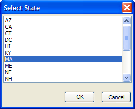
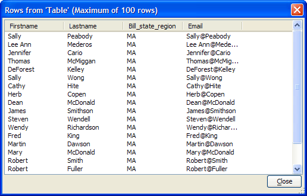

Using Arguments in a Record Update
This example uses an argument to select records from the AlphaSports.mdb customer table. We will filter the selected records using an argument for the bill_state_region field. In the Interactive window create the AlphaDAO objects that you will need.
|
dim conn as SQL::Connection dim rs as SQL::ResultSet dim args as SQL::Arguments |
DIM other variables.
|
dim states_qry as C dim state_list as C dim state_choice as C dim update_qry as C dim review_qry as C |
Open the connection.
|
? conn.open("{A5API=Access,FileName='C:\Program Files\a5v8\MDBFiles\Alphasports.mdb',UserName='Admin'}") = .T. |
Get a list of states.
|
states_qry = "SELECT DISTINCT bill_state_region FROM customer ORDER BY bill_state_region" ? conn.execute(states_qry) = .T. |
Convert the ResultSet into a CR-LF delimited string with the .ToString(?) method and present it to the user.
|
state_list = conn.resultset.tostring() state_choice = ui_get_list2("Select State", "", state_list, 1) |

Create an argument to hold the state_choice value using the .ADD(?) method.
|
? args.add("state", state_choice) = .T. |
The email values will be calculated using the CONCATENATE() portability function, which will combine the firstname field, "@" symbol, and lastname field. To use a Portable SQL function, you must first set the .PortableSQLEnabled? property to TRUE.
|
conn.PortableSQLEnabled = .t. update_qry = "update customer set email = Concatenate(firstname, \"@\", lastname) where bill_state_region = :state" conn.execute(update_qry, args) = .T. |
To view the results, execute a new query and preview the ResultSet.
|
review_qry = "select firstname, lastname, bill_state_region, email from customer where bill_state_region = :state" ? conn.execute(review_qry, args) = .T. rs = conn.resultset SQL_ResultSet_Preview(rs) |

Note that these two sets of statements are equivalent.
|
rs = conn.resultset SQL_ResultSet_Preview(rs) SQL_ResultSet_Preview(conn.resultset) |
Close the connection.
|
conn.close() |
Limitations
See Also
Working with SQL Databases, SQL::Arguments Object?